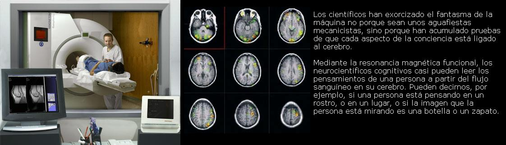
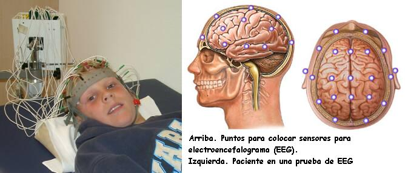
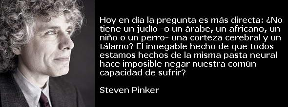

La joven sobrevivió a un accidente de coche, en cierto modo. Algunas partes de su cerebro quedaron aplastadas y a los cinco meses pudo abrir los ojos, pero no respondía a los estímulos visuales, a los sonidos ni al tacto. Se encontraba en lo que en la jerga neurológica se denomina estado vegetativo persistente. Dicho en lenguaje corriente, más cruel, era un vegetal.
Imagínense la sorpresa de los científicos británicos y belgas cuando escanearon su cerebro empleando una técnica de resonancia magnética que detecta la sangre que fluye hacia las partes activas de cerebro. Cuando pronunciaban frases, las partes del cerebro implicadas en el lenguaje se activaban. Cuando le pedían que imaginara que paseaba por las habitaciones de su casa, las partes del cerebro implicadas en la orientación espacial y el reconocimiento de lugares se activaban. Y cuando le pedían que imaginara que jugaba al tenis, se sumaban también las regiones cerebrales que disparan la actividad motora. En realidad, su escáner apenas se diferenciaba del de voluntarios sanos. Al parecer, la mujer tenía destellos de conciencia.
Traten de hacerse a la idea de cómo sería estar en el lugar de esa mujer. ¿Percibe las palabras y caricias de su desconsolada familia mientras le corroe la frustración por su incapacidad para tranquilizarles y hacerles ver que usted los comprende? ¿O se encuentra a la deriva, entre brumas, y en el momento en que oye una voz vuelve a la vida con un pensamiento concreto, sólo para volver a sumirse de nuevo en el vacío? Si pudiéramos experimentar una existencia así, ¿la preferiríamos a la muerte? Y si estas preguntas tienen respuesta, ¿cambiaría nuestra política con respecto a los pacientes incapaces de mostrar reacciones, de manera que resolver el caso de Terri Schiavo pareciera un juego de niños?
La noticia de este singular caso, el pasado mes de septiembre, fue sólo el impacto más reciente de un nuevo y estimulante campo de estudio, la ciencia de la conciencia. Preguntas antes relegadas a la especulación teológica y a tertulias estudiantiles de medianoche están ahora en el primer plano de la neurociencia cognitiva. En algunas cuestiones se ha alcanzado cierto consenso. En otras, el desconcierto es tan grande que quizá nunca lleguen a resolverse. Algunas de nuestras convicciones más profundas acerca de lo que significa ser humano han empezado a tambalearse.
No debería sorprendernos que la investigación en torno a la conciencia provoque alborozo unas veces y otras resulte molesta. No se parece a ningún otro asunto. Como apuntó Descartes, no hay nada más indudable que nuestra propia conciencia. Las principales religiones la localizan en un alma que sobrevive a la muerte del cuerpo para recibir lo que en justicia merece o para fundirse en una mente universal. Para cada uno de nosotros la conciencia es la vida misma, por esta razón dijo Woody Allen: “No quiero conseguir la inmortalidad por medio de mi obra. Quiero conseguirla no muriéndome.” Y la convicción de que otros también pueden sufrir y prosperar como nosotros mismos es la esencia de la empatía y el fundamento de la moralidad.
Para hacer progresos científicos en un terreno tan complicado como la conciencia es conveniente primero despejar algunas falacias. Es seguro que la conciencia no depende del lenguaje. Los niños, muchos animales y los pacientes que se han visto privados del habla por lesiones cerebrales no son robots insensibles; tienen reacciones como las nuestras, que indican que ahí hay alguien. Tampoco se puede identificar la conciencia con la conciencia de uno mismo. Todos nos hemos dejado llevar alguna vez por la música, el ejercicio o el placer sensual, pero esto es diferente a quedar inconsciente por un golpe.
El problema “fácil” y el “difícil”
Lo que queda no es un problema acerca de la conciencia sino dos, que el filósofo David Chalmers ha denominado el problema fácil y el problema difícil. Llamar fácil al primero es una broma de los investigadores: es fácil en el sentido que lo es curar el cáncer o enviar a alguien a Marte. Esto es, los científicos saben más o menos qué buscar, y con la suficiente financiación y pericia intelectual es probable que lo consigan en este siglo.
¿Qué es exactamente el “problema fácil”? Es el que Freud hizo célebre, la diferencia entre pensamientos conscientes e inconscientes. Algunos tipos de información que se encuentran en el cerebro -como lo que tiene ante la vista, sus fantasías, sus planes para el día, sus placeres y contratiempos- son conscientes. Puede tomarlos en consideración, discutirlos y permitir que guíen su comportamiento. Otras clases, como el control del ritmo cardíaco, las reglas que ordenan las palabras cuando habla y la secuencia de contracciones musculares que le permiten coger un lápiz son inconscientes. Han de encontrarse en algún lugar del cerebro, ya que sin ellas no podría caminar, hablar ni ver, pero se hallan apartadas de los circuitos de planificación y razonamiento, y usted no puede decir nada acerca de ellas.
Así pues, el problema fácil consiste en distinguir la computación mental consciente de la inconsciente, identificar sus correlatos en el cerebro y explicar por qué se desarrolló.
El problema difícil, por su parte, es por qué sentimos que un proceso consciente tiene lugar en nuestra cabeza, por qué hay primera persona, experiencia subjetiva. No es sólo que una cosa verde nos parece diferente de una roja, nos recuerda otras cosas verdes y nos permite decir “Eso es verde” (el problema fácil), sino que parece también realmente verde: produce una experiencia de verdor que no es reducible a ninguna otra. Como dijo Louis Armstrong cuando le pidieron que definiera el jazz, “Si llegas a preguntar qué es, nunca llegarás a saberlo.”
El problema difícil consiste en explicar cómo surge la experiencia subjetiva a partir de la computación neural. El problema es difícil porque nadie sabe de qué forma puede solucionarse, ni siquiera si, para empezar, se trata de un genuino problema científico. Y no sorprende que todo el mundo esté de acuerdo en que el problema difícil (si acaso es un problema) sigue siendo un misterio.
Aunque ninguno de esos dos problemas ha sido resuelto, los neurocientíficos están de acuerdo en muchos puntos de ambos, y lo que encuentran menos controvertido es lo que para mucha gente profana en la materia es lo más chocante. Francis Crick lo llamó “la hipótesis asombrosa”, la idea de que nuestros pensamientos, sensaciones, alegrías y dolores consisten por entero en la actividad fisiológica de los tejidos cerebrales. La conciencia no reside en un alma etérea que hace uso del cerebro como de un PDA; la conciencia es la actividad del cerebro.
El cerebro en cuanto máquina
Los científicos han exorcizado el fantasma de la máquina no porque sean unos aguafiestas mecanicistas, sino porque han acumulado pruebas de que cada aspecto de la conciencia está ligado al cerebro. Mediante la resonancia magnética funcional, los neurocientíficos cognitivos casi pueden leer los pensamientos de una persona a partir del flujo sanguíneo en su cerebro. Pueden decirnos, por ejemplo, si una persona está pensando en un rostro, o en un lugar, o si la imagen que la persona está mirando es una botella o un zapato.
Y la conciencia puede ser dirigida mediante manipulaciones físicas. La estimulación eléctrica del cerebro durante una intervención quirúrgica puede hacer que la persona tenga alucinaciones indistinguibles de la realidad, tales como una canción que suena en la habitación o una fiesta de cumpleaños de la infancia. Sustancias químicas que afectan al cerebro, desde la cafeína y el alcohol al Prozac o el LSD pueden provocar profundas alteraciones en el modo como la gente piensa, siente o ve. Al cortar el cuerpo calloso mediante la cirugía y separar los dos hemisferios (un tratamiento para la epilepsia) se generan dos conciencias dentro del mismo cráneo, como si con un cuchillo hubiéramos dividido el alma en dos.
Y por lo que sabemos, cuando la actividad fisiológica del cerebro cesa, la conciencia de la persona deja de existir. Los intentos de entrar en contacto con las almas de los muertos (búsqueda emprendida hace un siglo por científicos serios) revelaron únicamente trucos de magia baratos, y las experiencias cercanas a la muerte no son informes de testigos oculares de la separación del alma del cuerpo, sino síntomas de la carencia de oxígeno en los ojos y el cerebro. En septiembre, un equipo de neurocientíficos suizos anunciaron que podían provocar y anular a voluntad experiencias extracorporales estimulando la parte del cerebro en la que convergen la visión y las sensaciones corporales.
La ilusión del control
Otra asombrosa conclusión de la ciencia de la conciencia es que nuestra sensación intuitiva de que hay un “yo” actuante que reside en un centro de control de nuestro cerebro, escaneando las pantallas de los sentidos y pulsando los botones de los músculos, es una ilusión. La conciencia consiste en una tormenta de eventos distribuidos por el cerebro. Estos eventos pugnan por captar nuestra atención, y cuando un proceso se destaca sobre los demás, el cerebro racionaliza la respuesta a posteriori y produce la impresión de que un yo singular se encarga de todo.
Fijémonos en los famosos experimentos de disonancia cognitiva. Cuando un experimentador sometió a los voluntarios a descargas eléctricas en un fingido experimento acerca del aprendizaje, aquellos a los que se dio una buena razón (“Ayudará a los científicos a comprender los procesos de aprendizaje”) describieron las descargas como más dolorosas que aquellos a los que se dio una razón débil (“Tenemos curiosidad.”) Presumiblemente, esto se debe a que el segundo grupo se hubiera sentido ridículo de haber sufrido sin una buena razón para ello. No obstante, cuando se les preguntó por qué habían accedido a recibir las descargas, ofrecieron con toda sinceridad razones falsas, tales como “Solía chapucear con aparatos de radio y me acostumbré a las descargas.”
No sólo se racionalizan las decisiones tomadas en circunstancias poco claras, sino también la textura de nuestra experiencia inmediata. Todos sentimos que somos conscientes de un mundo rico y lleno de detalles que se muestra ante nuestros ojos. Sin embargo, dejando a un lado el punto muerto de nuestra vista, la visión es sorprendentemente grosera. Mantenga por ejemplo la mano alejada unos centímetros de su punto de mira y cuente los dedos. Si alguien retirara y volviera a colocar un objeto cada vez que usted parpadea (lo cual pueden simular los experimentadores proyectando dos imágenes que se suceden rápidamente), le costaría notar el cambio. Normalmente nuestra vista va saltando con rapidez de un punto a otro, posándose en todo objeto que reclame nuestra atención, mostrándonos sólo lo que necesitamos ver. Esto nos lleva a engaño y nos hace creer que hemos tenido ante la vista todo al detalle: es un ejemplo de cómo sobrestimamos el alcance y la capacidad de nuestra conciencia.
La autoría de las acciones voluntarias también puede ser una ilusión, el resultado de advertir una correlación entre lo que decidimos y el movimiento de nuestro cuerpo. El psicólogo Dan Wegner estudió el juego en el que un sujeto se sienta frente a un espejo mientras alguien tras él le coge los brazos por debajo de los sobacos y los mueve a uno y otro lado, haciendo parecer que es el propio sujeto el que los mueve. Si el sujeto oye una grabación que le indica a la persona que está tras él qué hacer con los brazos (saludar, tocar con la mano su nariz, etc.), aquel siente como si fuera él mismo quien en realidad dirige los brazos.
La manipulación cerebral de la información se manifiesta de forma aún más drástica en las condiciones neurológicas en que las partes sanas del cerebro descartan los puntos flacos de las partes dañadas (que son invisibles al yo, ya que son parte de él). Un paciente que no es capaz de reconocer de inmediato a su esposa al verla, pero que reconoce que su aspecto y modo de actuar son idénticos a los de ella, extrae la conclusión de que se trata de un impostor muy bien entrenado. Un paciente al que, creyendo encontrarse en su casa, se le muestra el ascensor del hospital, dice sin despeinarse, “No podría creer lo que nos costó instalarlo.”
¿Por qué existe la conciencia, al menos en el sentido del “problema fácil” en que partes de la información son accesibles y otras quedan ocultas? Una razón es la sobrecarga de información. Al igual que hoy en día una persona puede verse abrumada por el aluvión de datos que le llegan a través de los medios de comunicación, los circuitos cerebrales responsables de la toma de decisiones colapsarían si constantemente les fuera transferida información de cada detalle y cada pequeño movimiento muscular registrado en algún lugar del cerebro. En vez de ello, nuestra memoria de trabajo y nuestro foco de atención recibe resúmenes de los eventos y estados más relevantes para actualizar nuestra comprensión del mundo y descubrir qué hacer a continuación. El psicólogo cognitivo Bernard Baars compara la conciencia con una pizarra global en la que los procesos cerebrales anotan sus resultados y observan los resultados de los demás.
Creyendo nuestras propias mentiras
Una segunda razón de que la información pueda ser apartada de la conciencia es estratégica. El biólogo evolucionista Robert Trivers ha advertido que las personas tienen motivos para venderse a sí mismas como agentes benévolos, racionales y competentes. El mejor propagandista es aquel que cree sus propias mentiras, asegurándose así de no dejar el engaño al descubierto mediante pequeños movimientos nerviosos o contradicciones. De modo que el cerebro podría haber sido modelado para mantener los datos comprometedores alejados de los procesos conscientes que gobiernan nuestra interacción con las demás personas. Al mismo tiempo, conserva esos datos en procesos inconscientes para evitar que la persona vaya demasiado lejos y pierda contacto con la realidad.
¿Y qué hay del propio cerebro? Quizá se pregunte cómo han sido capaces los científicos de empezar siquiera a hallar la sede de la conciencia entre el caótico murmullo de cientos de miles de millones de neuronas. El truco consiste en observar qué partes del cerebro sufren cambios cuando la conciencia de una persona salta de una experiencia a otra. Hay una técnica, denominada rivalidad binocular, en la que al ojo izquierdo se le presentan rayas verticales y al ojo derecho rayas horizontales. Los ojos compiten por la conciencia y la persona ve rayas verticales durante unos segundos, luego rayas horizontales, y así sucesivamente.
Una forma sencilla de experimentar el efecto por usted mismo consiste en mirar con el ojo derecho una pared blanca a través de un tubo de papel y mantener la mano izquierda justo delante de su ojo izquierdo. Tras unos segundos, un agujero blanco aparecerá en su mano, luego desaparecerá, luego volverá a aparecer, etc.
También los monos experimentan la rivalidad binocular. Pueden aprender a apretar un botón cada vez que su percepción cambia, mientras los electrodos implantados en el cerebro registran cualquier cambio de actividad. El neurocientífico Nikos Logothetis descubrió que en las primeras áreas cerebrales en que se procesa la información visual, en la parte posterior del cerebro, apenas había cambios cuando la conciencia del mono pasaba de un estado a otro. En cambio, era en un tramo del recorrido del flujo de información situado más abajo, en una región que registra formas coherentes y objetos, donde se ponían de manifiesto los cambios en la conciencia del mono. Esto no significa que ese lugar en la parte inferior del cerebro sea la pantalla de televisión de la conciencia. Lo que significa, según la teoría de Crick y su colaborador Christof Koch, es que la conciencia reside sólo en la partes “superiores” del cerebro, que están conectadas a los circuitos responsables de la emoción y la toma de decisiones, precisamente lo que cabe esperar de la metáfora de la pizarra.
Ondas cerebrales
Se puede seguir la pista de la conciencia en el cerebro no sólo espacialmente, sino también en el tiempo. Los neurocientíficos saben desde hace tiempo que la conciencia depende de ciertas frecuencias de oscilación visibles en el electroencefalograma (EEG). Estas ondas cerebrales consisten en circuitos de activación entre el córtex (la superficie rugosa del cerebro) y el tálamo (el conjunto de núcleos situados en el centro del cerebro que sirven de estaciones de recepción y transmisión). Ondas grandes, lentas y regulares indican un coma, anestesia o sueño profundo; ondas más pequeñas, rápidas y agudas corresponden al estado de vigilia y alerta. Estas ondas no son como el inútil zumbido de un electrodoméstico ruidoso, sino que puede que permitan a la conciencia hacer su trabajo en el cerebro. Es posible que liguen la actividad de regiones muy distantes entre sí (una para el color, otra para la forma, una tercera para el movimiento) para dar lugar a una experiencia consciente coherente, algo así como las emisoras y los receptores de radio sintonizados en la misma frecuencia. En efecto, cuando dos patrones compiten por la conciencia en un experimento de rivalidad binocular, las neuronas que representan al ojo que está “ganando” la competición oscilan en sincronía, mientras que las que representan al ojo suprimido no lo hacen.
De modo que los neurocientíficos van bien encaminados para identificar los correlatos neurales de la conciencia, una parte del “problema fácil”. ¿Pero cómo explicar de qué manera esos eventos causan de hecho la conciencia en el sentido de experiencia interna: el “problema difícil”?
Abordando el “problema difícil”
Para apreciar la dificultad del problema difícil, considere cómo podría saber si usted ve los colores de la misma manera que yo. Seguro que tanto usted como yo decimos que la hierba es verde, pero quizás usted ve la hierba de un color que yo, si estuviera en su piel, describiría como púrpura. O plantéese si no podría existir un auténtico zombi, un ser que actúa igual que usted o yo pero que en realidad no posee un yo que sienta nada. Ese era el quid de un episodio de Star Trek en el que los oficiales querían practicar la ingeniería inversa con el teniente Data, produciéndose un encendido debate sobre si esto no sería más que desmontar una máquina o bien significaría acabar con una vida sensible.
Nadie sabe qué hacer con el problema difícil. Hay quien puede verlo como una puerta que nos permita echar una ojeada al alma, pero esto no hace más reetiquetar el problema de la “conciencia”, para pasar a llamarlo el problema del “alma”: un simple juego de palabras que no proporciona conocimiento alguno.
Muchos filósofos, como Daniel Dennett, niegan que el “problema difícil” exista siquiera. Dicen que especular con zombis y colores invertidos es una pérdida de tiempo, ya que no hay nada que pueda resolver el problema de ninguna manera. Todo lo que pueda hacerse para comprender la conciencia -como descubrir qué longitudes de onda hacen que la gente vea verde o cuánto dicen que se parece al azul o qué emociones asocian con él- se refiere únicamente al procesamiento de la información en el cerebro, quedando así de nuevo subsumido en el “problema fácil”, sin que haya nada más que explicar. La mayoría de la gente reacciona a este argumento con incredulidad, ya que parece negar un hecho fundamental innegable: nuestra propia experiencia.
Entre los neurocientíficos, la actitud más frecuente con respecto al “problema difícil” es que por el momento no está resuelto, pero que quizá sucumba a la investigación que vaya resolviendo el “problema fácil”. Otros son escépticos ante este alegre optimismo, porque ninguna de las incursiones en el problema fácil nos acerca lo más mínimo a la solución del problema difícil. Dicen que identificar la conciencia con la fisiología cerebral es una suerte de “chovinismo de la carne”, que negaría dogmáticamente la conciencia del teniente Data sólo porque carece del tejido blando de un cerebro humano. Identificarla con el procesamiento de información iría demasiado lejos en el sentido opuesto y concedería una conciencia simple a termostatos y calculadoras; un salto que la mayoría de la gente encuentra difícil de digerir. Algunos inconformistas, como el matemático Roger Penrose, sugieren que algún día la respuesta podría encontrarse en la mecánica cuántica. Pero, a mi entender, esto equivale al sentimiento de que la mecánica cuántica es extraña, y que como la conciencia también lo es, quizá la mecánica cuántica puede explicar la conciencia.
Y tenemos también la teoría expuesta por el filósofo Colin McGinn de que el vértigo que sentimos cuando nos planteamos el problema difícil es él mismo una peculiaridad de nuestro cerebro. El cerebro es un producto de la evolución, y así como los cerebros de los animales tienen sus limitaciones, nosotros tenemos las nuestras. Nuestro cerebro no puede retener cien números en la memoria, no puede visualizar un espacio de siete dimensiones y quizá tampoco puede comprender intuitivamente por qué el procesamiento de la información neural que observamos desde fuera debería dar lugar a la experiencia subjetiva interna. Me inclino por ello, aunque admito que la teoría podría ser demolida en el momento en que un genio aún no nacido -un Darwin o un Einstein de la conciencia- aparezca con una asombrosa nueva idea que de repente nos haga verlo todo claro.
Sean cuales sean las soluciones a los problemas fácil y difícil, pocos científicos dudan de que la conciencia se localiza en la actividad del cerebro. Para muchos profanos esta es una perspectiva terrible. No sólo frustra la esperanza de que podamos sobrevivir a la muerte de nuestro cuerpo, sino que también socava la idea de que somos agentes libres responsables de nuestras decisiones, no sólo en esta vida, sino también en la que pudiera venir. En su ensayo, Lo siento, pero su alma acaba de morir, a Tom Wolfe le preocupaba que, al haber matado la ciencia el alma, “el espeluznante carnaval que se sucederá puede hacer que la frase ‘el eclipse total de todos los valores’ parezca fútil.”
Hacia una nueva moralidad
Bajo mi punto de vista, esto es retrógrado: la biología de la conciencia ofrece una base más sólida para la moralidad que el indemostrable dogma de un alma inmortal. No es sólo que el conocimiento de la fisiología de la conciencia reducirá el sufrimiento humano por medio de nuevos tratamientos contra el dolor y la depresión. Ese conocimiento puede también forzarnos a reconocer los intereses de otros seres, lo cual es la esencia de la moralidad.
Como sabe cualquier estudiante de filosofía, nada puede forzarme a creer que alguien más es consciente aparte de mí. Esta posibilidad de negar que otras personas tengan sentimientos no es sólo un ejercicio académico, sino un vicio demasiado común, como lo muestra la larga historia de la crueldad humana. Sin embargo, una vez nos damos cuenta de que nuestra propia conciencia es producto de nuestro cerebro y de que los demás tienen cerebros como el nuestro, negar la sensibilidad de los demás se vuelve absurdo. “¿No tiene ojos un judío?”, preguntaba Shylock. Hoy en día la pregunta es más directa: ¿No tiene un judío -o un árabe, un africano, un niño o un perro- una corteza cerebral y un tálamo? El innegable hecho de que todos estamos hechos de la misma pasta neural hace imposible negar nuestra común capacidad de sufrir?
Y si se piensa en ello, la doctrina de una vida futura no es tan edificante después de todo, ya que necesariamente devalúa la vida en la tierra. Basta recordar a las personas más famosas de la historia reciente que actuaron con la esperanza de una recompensa en el más allá: los conspiradores que secuestraron los aviones el 11-S.
Piense también en por qué a veces nos recordamos a nosotros mismos que “la vida es corta”. Es un impulso de mostrar un gesto de afecto a una persona querida, de enterrar el hacha de guerra en una disputa sin sentido, de aprovechar el tiempo de una manera productiva en lugar de despilfarrarlo. Yo diría que no hay nada que dé más sentido a la vida que la convicción de que cada momento de conciencia es un precioso y frágil regalo.
Steven Pinker es catedrático de psicología en Harvard y autor de El instinto del lenguaje, Cómo funciona la mente y La tabla rasa.
Volver a la sección Escepticismo
Comentarios
Comments powered by Disqus